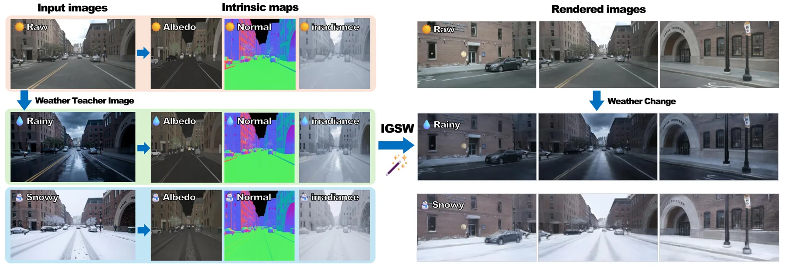
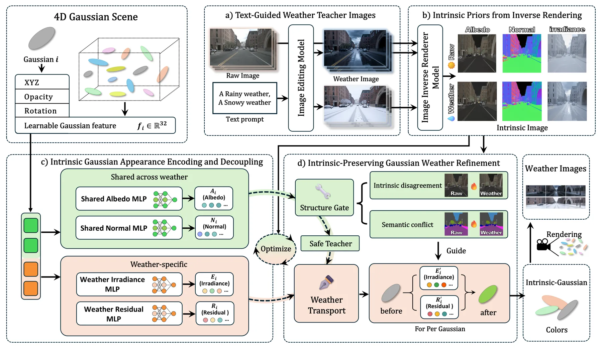
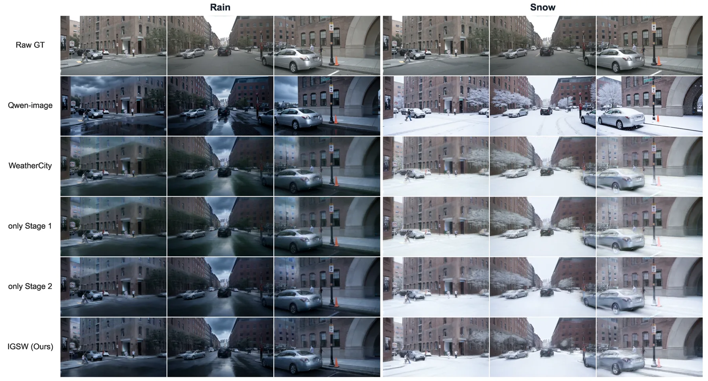
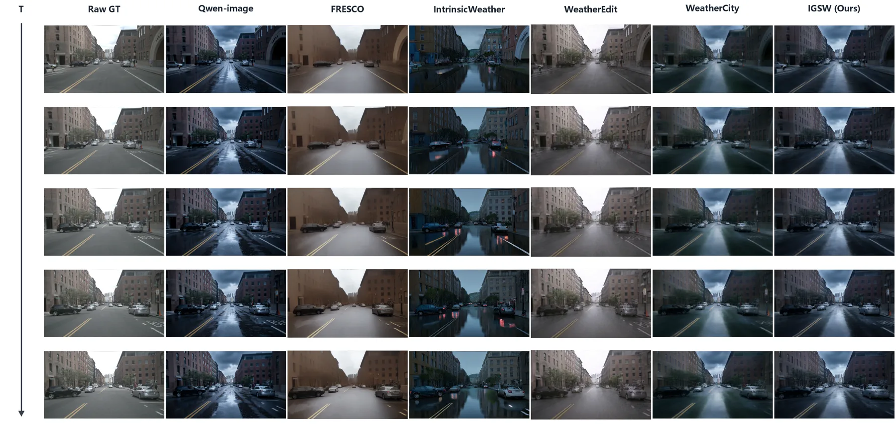
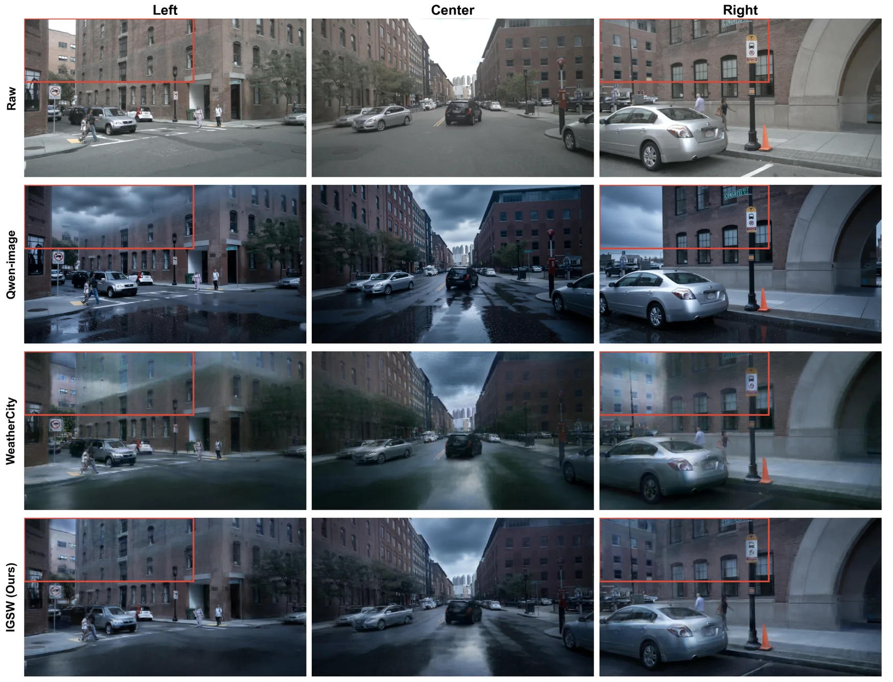

IGSW：把天气拆成“共享反照率/法线 + 专属光照”，做可编辑的 4D 高斯街景
IGSW: Multi-Weather Urban Scene Reconstruction with Intrinsic-Decoupled Gaussian Splatting
输入是一段驾驶序列、目标天气的教师图与本征图（反照率、法线、辐照度）。Stage I 把每个背景高斯的外观特征解耦成天气共享项（反照率、法线）与天气专属项（辐照度、残差），用教师图与本征图做特征级软监督，训练 30,000 步；Stage II 先做 800 步原观测恢复，再用 3,000 步天气细化，门控按语义冲突与跨天气本征差异筛掉不可靠区域，逐高斯天气传输变量与目标天气分支补足光照。nuScenes 上雨天真值无关指标 CLIP-S 0.8718（WeatherCity 0.8582）、Sem-CS 0.8992（0.7129）、时间扭曲误差 E_warp 0.0021（0.0023）；Waymo 雨天的 E_warp 0.0009 对 WeatherCity 0.0090、Qwen-Image 0.0547。
Sem-CS (rain, nuScenes)
E_warp (rain, Waymo)
E_warp (rain, nuScenes)
evaluation scale
作者、单位与技术谱系 · Research context
作者与单位
研究脉络
- 3D Gaussian Splatting（Kerbl et al., 2023）方法基座关系：提供显式高斯表示与实时泼溅渲染，本文在其上扩展外观分解与动态场景建模。[论文 §2-C]
- WeatherCity（CVPR 2026）对比基线关系：同样做 4D 城市多天气编辑，但没有本征分解；本文的门控正是针对它会继承教师结构错误这一弱点。[论文表 I 与 §4-B]
- IntrinsicWeather（CVPR 2026）上游工作关系：提供本征空间天气编辑与本征图估计，本文借用其逆渲染器生成反照率/法线/辐照度先验。[论文 §2-B 与 §4-A]
合作网络
- 重庆大学机械与运载工程学院Zhongquan Wang → Chongqing University关系：署名单位[论文首页脚注]
- IGSW 与 WeatherCity 的技术对照IGSW → WeatherCity关系：同一任务的直接基线[论文表 I 与图 6]
- 教师与本征模型的依赖IGSW → Qwen-Image / IntrinsicWeather关系：外部模型依赖[论文 §4-A]
作者、单位与外部模型依赖来自论文正文；技术谱系依据论文自述与引用；未发现公开材料说明作者之间的具体分工或师生关系。
方法本质拆解 · What actually changed
两阶段训练，不换主干
以 4D 高斯场景为基础，Stage I 训练 30,000 步学习本征解耦表示，Stage II 先 800 步恢复原观测、再 3,000 步做天气细化；没有训练新的扩散模型，教师图与本征图都来自现成模型。所有优化在单张 RTX 4080 上完成，说明方法本身不依赖大规模算力。
约束是“共享/专属”分工与门控
反照率与法线被强制跨天气共享，辐照度与残差允许随天气变，这等于给外观加了一个结构不变量约束；Stage II 的门控再用语义冲突与跨天气本征差异决定哪些像素可以接受教师监督。约束作用在高斯外观参数与监督掩码上，不改变几何与运动。
推理是渲染，不是再生成
推理阶段只做高斯泼溅渲染：几何、共享本征项与天气专属项都已优化好，切换天气只需换目标天气分支与天空项，不需要再跑扩散模型。时间一致性来自同一组高斯与同一套传输变量，而不是逐帧后处理。
把“该变的”和“不该变的”分开监督
方法假设天气主要改变光照与大气，而材质与几何不变；于是把外观拆成两组变量，分别用原图与教师图监督，门控则保证教师只在结构可信处生效。它没有做的是显式建模雨的粒子散射或湿滑反射的物理过程，也没有验证几何是否被编辑影响，因此更适合作为数据增广/仿真外观层，而不是物理正确的天气辐射模型。
输入 = 驾驶序列 + 天气教师图 + 本征图；改变的位置 = 高斯外观参数（拆成共享反照率/法线与专属辐照度/残差）；约束/动作 = 特征级软监督 + 结构保持门 + 逐高斯天气传输；直接效果 = 语义一致性 0.90、Waymo 时间误差 0.0009。

结论与问题Conclusion & Motivation
核心结论
天气编辑的关键不是把目标天气“贴”到画面上，而是把场景外观拆成不随天气变的材质/结构与随天气变的光照/氛围，再用门控阻止教师图的结构错误进入 3D。IGSW 在 nuScenes 十场景上把语义一致性 Sem-CS 从 WeatherCity 的 0.7129 提到 0.8992，内容相似度 CLIP-S 从 0.8582 提到 0.8718，时间扭曲误差 E_warp 从 0.0023 降到 0.0021；Waymo 上雨天 E_warp 0.0009，对 WeatherCity 0.0090、Qwen-Image 0.0547，说明跨数据集都不是只对单一场景调参的结果。
动机与问题
雨雪改变的是光照、反射与对比度，不应改变道路、建筑与交通参与者的空间布局；但扩散编辑器生成的教师图经常“顺手”改结构，例如生成云层遮住本应可见的建筑，或给车辆加上不一致的细节。直接把这类图像当作监督去拟合高斯外观，会把错误固化进 4D 表示，破坏多视角一致性与时间连续性。作者把问题拆成两问：哪些场景因素应该随天气改变，哪些教师区域值得信任；前者用本征分解回答，后者用可靠性门控回答。
方法Method
方法总览
Stage I 在 4D 高斯上做本征解耦：每个背景高斯保留位置、尺度、旋转、不透明度与 32 维外观特征，但把外观分成天气共享的反照率与法线、天气专属的辐照度与残差；教师图（Qwen-Image 生成）与逆渲染本征图（IntrinsicWeather 的 SD3.5 模型）提供特征级软监督，让共享项贴近原场景、专属项靠近目标天气。Stage II 固定几何与共享本征表示，用结构保持门判断教师区域是否可靠：可靠区继续用教师外观监督，冲突区改用保留原结构的天气风格目标；随后逐高斯天气传输变量与目标天气分支细化辐照度与残差。
关键技术细节
解耦的实现是把高斯颜色写成反照率、法线与辐照度的组合，再叠加天气专属残差与目标天气天空项，渲染时按深度排序做 alpha 合成并加相机相关仿射颜色校正。门控由两部分构成：语义冲突（教师图与原图在分割语义上的不一致）与跨天气本征差异（原始与编辑后反照率/法线的偏差），两者共同决定该区域是否接受教师监督。训练配置是 Stage I 30,000 步、Stage II 先 800 步原观测恢复再 3,000 步天气细化，单张 RTX 4080；nuScenes 每场景 100 个同步时间戳、3 个前视相机，共 300 张图/天气条件，原始分辨率 1600×900，Waymo 为 1920×1280。

实验Experiments
实验设置
数据是 nuScenes 十个场景与 Waymo Open Dataset，各做原图/雨、原图/雪两组模型；评测用四个指标：CLIP-S（与原始图像的图像特征相似度）、CLIP-DS（原图到天气图的改变与固定文本方向的对齐）、Sem-CS（ADE20K 预训练 UPerNet–ConvNeXt-XL 的频率加权语义 IoU）、E_warp（用 RAFT-Large 由相邻原帧估计光流对齐天气帧后的平方 RGB 误差）。图像指标用全部 300 张图，时间指标用全部 297 个同相机相邻帧对。对照包括图像编辑器 Qwen-Image、视频编辑器 FRESCO、本征逆/前向渲染 IntrinsicWeather，以及 4D 场景编辑 WeatherEdit 与 WeatherCity；场景级方法共用同一批教师图以保证公平。
实验数字与比较
表 II（nuScenes，雨/雪）：IGSW 的 CLIP-S 0.8718 / 0.8782，WeatherCity 0.8582 / 0.8652；Sem-CS 0.8992 / 0.8792，WeatherCity 0.7129 / 0.6772；E_warp 0.0021 / 0.0028，WeatherCity 0.0023 / 0.0038，Qwen-Image 0.0294 / 0.0516。表 III（Waymo，雨/雪）：CLIP-DS 0.2940 / 0.2869（WeatherCity 0.1375 / 0.0937），Sem-CS 0.8723 / 0.8050（0.7398 / 0.6633），E_warp 0.0009 / 0.0019（0.0090 / 0.0101）。表 V 的模块消融（nuScenes 全序列）：只 Stage I 时雨天 CLIP-DS 0.1326、Sem-CS 0.7142；只 Stage II 时 Sem-CS 0.8990 但 CLIP-DS 仅 0.1279；两阶段合并后 CLIP-DS 0.1599、Sem-CS 0.8993，说明门控与解耦各自负责不同指标。
消融/失败边界
表 V 给出的因果很清楚：去掉 Stage II 的结构门控（只 Stage I），雨天 Sem-CS 从 0.8993 掉到 0.7142、E_warp 从 0.0022 升到 0.0023，说明教师结构错误会直接污染语义一致性；反过来只做 Stage II 而不做本征解耦，Sem-CS 虽高（0.8990）但 CLIP-DS 只有 0.1279，天气方向表达不足，说明解耦负责“把天气变化讲清楚”。失败边界在时间指标上也能看到：完整模型雨天 E_warp 0.0022 略高于只 Stage II 的 0.0016，即结构门控在少数帧上会让天气外观更“硬”，带来轻微闪烁；作者把这个权衡留给读者判断。另外所有指标都是代理量，若教师图整体偏移或本征图在暗光下失效（如 E11 类暗场景），门控的语义冲突判据本身会不可靠。
局限与迁移Limitations & Transfer
局限与待核验
作者没有声称有真实多天气配对真值，评测完全依赖 CLIP 相似度、语义 IoU 与光流扭曲三类代理指标，因此“看起来像雨天”与“物理上正确的雨天空辐射”之间仍有距离。实验只覆盖雨与雪，没有雾、夜间、强逆光；nuScenes 只取 10 个场景，Waymo 的场景数正文未逐条列出。我们要核验的是：门控阈值与语义分割器（ADE20K 训练的 UPerNet）在城市场景之外的迁移性；Stage II 的 3,000 步细化是否会在长序列上累积漂移；逐高斯天气传输变量是否会与动态物体的运动耦合（论文只评外观与时间一致性，没有评几何）。此外，教师图与本征图分别来自两个扩散模型，二者的误差如何相互抵消，正文没有拆解。
与你研究路线的关系
我们做多传感器/多天气数据增广时，最大的风险是“生成图改了结构却被当作监督”，这篇的门控思路可以直接借用：先用语义冲突筛掉明显改结构的区域，再用本征差异筛掉光照不一致的区域，只让可靠区参与监督。第二个可迁移点是共享/专属分解本身——把反照率与法线当作跨天气不变量，相当于给多会话重建提供了一个稳定的外观锚，可以在我们做跨天气回环或地图维护时减少外观漂移的影响。下一步可以拿我们自己的园区/道路序列，用同一套 Qwen 教师 + 逆渲染流程生成雨雪图，先只做 Stage I 看结构是否守住，再加入门控并量化“语义 IoU 提升 vs 时间闪烁增加”的权衡；同时应补一个几何指标（如深度或点云一致性），因为现有指标完全不看几何。





